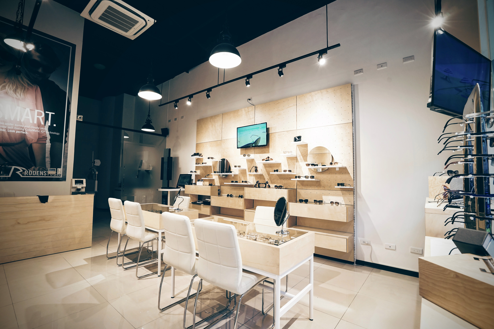

素材／加工
正式な材質、板厚、線径、加工条件は資料で承認されていません。図面とサンプルで確認してください。
ANONYMOUS PROJECT / EYEWEAR RETAIL
匿名プロジェクト画像をもとに、アイウェア展示フック、背面システム、店内動線について相談を始めるためのページです。

購買担当と設計チームは、商品カテゴリー、展示密度、フック形状、背面システム、店頭での取り扱いを確認し、製品ページで正式な要件に落とし込めます。
匿名プロジェクト画像であり、顧客名、完全な図面、数量、費用、効果数値は掲載していません。画像だけで特定SKUや正式仕様を証明するものではありません。
正式な材質、板厚、線径、加工条件は資料で承認されていません。図面とサンプルで確認してください。
最終納入地の記載または承認がありません。新案件で確認します。
2016年の店舗画像は展示方向を示すものです。以下の EYEHK 図面は関連製品資料であり、画像の店舗が特定 SKU を使用したという意味ではありません。
2025年図面には 160、175、150.93、128、25.4 mm の寸法と、レーザー切断した掛片を背面へ溶接する方向が記録されています。
2018年図面には t2.0 鉄板、4.0 mm 横方向鉄線、黒色粉体塗装、端部面取り、約 2° の上向き角度、145／175 mm 外形、40 mm 取付板が記録されています。
背板のピッチまたはスロット間隔、展示商品、フック長さ、予定数量、写真を共有してください。最新図面、サンプル、製品改訂版で互換性を確認します。
EYEHK 図面の年と 2016年の店舗画像は異なるため、画像だけで EYEHK SKU を証明できません。正式な材料、色、MOQ、納期、供給可否は案件ごとに確認します。
公開できる出典は匿名の 2016 年メガネ店舗画像です。顧客課題を完全に確認できる文章はなく、写真から要望や成果を推定していません。
メガネ小売の展示場面は確認できます。展示密度、フック形状、背板システム、店頭での取り扱いを相談する起点です。
EYEHK の 2018 年／2025 年図面を関連製品資料として参照できます。正式な契約範囲は出典で承認されていないため、画像や図面を完全な納品の証拠として扱いません。
匿名店舗画像と、関連フック図面に見える寸法、材料注記、加工方向を公開できます。画像と図面の年が異なるため、写真の SKU は推定していません。
最終数量、納期、納入地は出典に記載または承認されていません。新案件の図面、数量、工程、納入地で確認します。
匿名画像と仕様相談の入口です。設置完了、供給結果、効果数値は宣言していません。顧客名と完全な商務資料は非公開です。
匿名プロジェクトの画像と要件整理の入口です。確認できるメガネ小売の展示方向だけを掲載し、顧客名、数量、費用、納期、正式 SKU は推定していません。
店舗形態、商品、展示密度、背板または取付システム、予定数量、希望時期を共有してください。展示フックまたはメガネ展示フックの仕様確認につなげます。